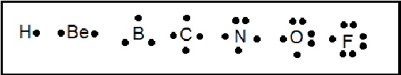

Para o 1º ano do Ensino Médio — Entenda como os átomos compartilham elétrons e por que alguns "sobram" sem formar ligações.
Nesta página, vamos explorar como os átomos se ligam covalentemente — e, mais importante, como os pares de elétrons não ligantes (ou pares livres) influenciam a geometria molecular e as propriedades das substâncias.
É um tipo de ligação química em que dois átomos compartilham um ou mais pares de elétrons para atingir estabilidade eletrônica (regra do octeto).
✅ Exemplo: Na molécula de H₂, cada átomo de hidrogênio tem 1 elétron. Ao compartilhar esse elétron, ambos passam a “sentir” que têm 2 elétrons na camada de valência — completando sua camada.
Nem todos os elétrons de valência participam de ligações. Os que não são compartilhados ficam “livres” ao redor do átomo — chamados de pares de elétrons não ligantes.
No H₂O, o oxigênio tem 6 elétrons de valência. Ele forma 2 ligações com hidrogênios (usando 2 elétrons), mas ainda sobram 4 elétrons → 2 pares livres!
Segundo a teoria VSEPR (Valence Shell Electron Pair Repulsion), todos os pares de elétrons (ligantes e não ligantes) repelem-se entre si, buscando o máximo afastamento possível.
➡️ A água é angular porque os 2 pares livres no oxigênio “empurram” os átomos de hidrogênio para mais perto, diminuindo o ângulo de ligação (104,5° vs 109,5° no metano).
Os pares livres influenciam diretamente propriedades como:
üìö Compara√ß√£o: CO₂ (linear, apolar) vs H₂O (angular, polar). Ambos t√™m 2 liga√ß√µes, mas a água tem pares livres ‚Äî o que muda tudo!
Abaixo, uma tirinha ilustrativa mostrando a distribuição dos elétrons de valência nos elementos do segundo período — note como os pares livres aumentam conforme avançamos na tabela periódica.
Observe: H tem 1 elétron, Be tem 2, B tem 3... até F, que tem 7 — e precisa de apenas 1 para completar o octeto. Os pontos pretos representam elétrons de valência.
Resolva exercícios interativos sobre ligações covalentes, pares livres e geometria molecular com feedback imediato e gabarito detalhado.
Acessar Exercícios